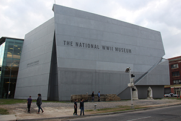
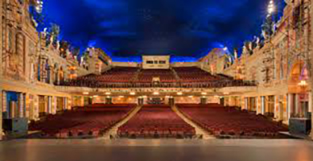
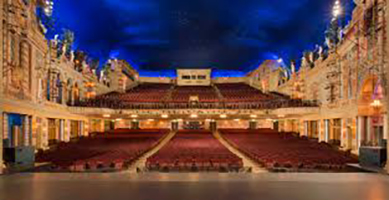
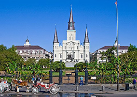
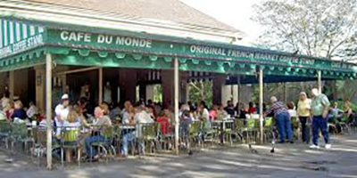
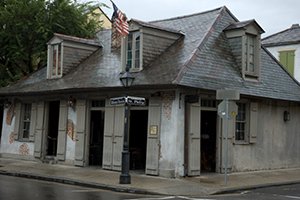
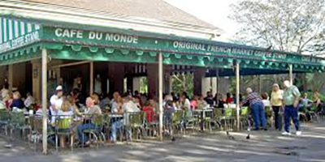
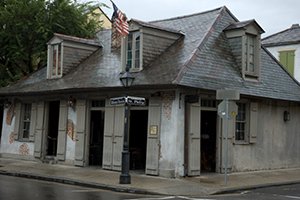
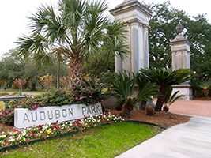
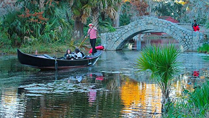

Local Information for Visitors
Starting at the Hyatt, you can walk Northeast (following the river when looking at Google Maps), to follow the suggestions below in order. There are many amazing restaurants everywhere, but the ones we’ve listed are local favorites!
Places that are within short walking-distance to the Hyatt:
Champions Square & Lafayette Square: Usually have live music
Restaurants: Willa Jean (try the chocolate chip cookie!), Maypop, Juan's Flying Burrito, Carmo (Carmo is one of the best Vegetarian restaurants in the city)
Places that are a longer walk or short Uber ride away:
Restaurants: Peche and Emeril’s. You will probably need a reservation for dinner at these places. Peche has the best gumbo and smothered catfish, but they are also known for their whole grilled fish.
Museums: Ogden, National WW2 Museum, Audubon Aquarium (and IMAX), Audubon Insectarium and Butterfly Garden
Woldenberg Park: Live music or festivals


Places that are a longer walk (about 25 minutes) or Uber ride away:
Saint Louis Cemetery #2: Some musicians, war heroes, politicians, and soldiers are buried here.
Armstrong Park & Congo Square: Music and festivals happen here.
Saenger Theatre: Music tours, Broadway
The Roosevelt: Inside this hotel is The Sazerac Bar, where the Sazerac cocktail was invented. An absolute must try. You should also try the Ramos Gin Fizz.

 

Now we're entering the French Quarter (FQ)!

Jackson Square (left pic): The St. Louis Cathedral has beautiful stained glass. There's also the Mardi Gras, Katrina, and several other smaller historical museums nearby. All around the square are artists, musicians, and street performers.
French Market (right pic): There are many shop stalls to buy all kinds of food, souvenirs, and art. Many of the shops are cash only.
Preservation Hall: Jazz!!! Many of the shows here are family-friendly.
Restaurants: All of the restaurants are great, but they're designed for tourists. So they're more expensive and not always as good as the food you'll find elsewhere in the city.
Cafe Du Monde: This is the #1 tourist destination in the Quarter, but the line can be hours long! We recommend trying a Morning Call (cash only) or CDM in other areas of the city if you don't want to wait in line. The thing to get here is a Cafe au Lait and an order of beignets (pronounced ben-yays). Don’t wear black and cover your beignets in as much powdered sugar as you possibly can!
Lafitte's Blacksmith Shop Bar: Famous bar built in the 1700s. It's haunted!
 



Frenchmen Street. Tourists always go to Bourbon Street (and you should check it out) but Frenchmen Street is the local’s favorite. Grab a bunch of friends and about $50 in cash and walk up and down Frenchmen all night. There's tons of great bars with live music: d.b.a., Spotted Cat, Blue Nile, Cafe Negril, Maison, Snug Harbor. The cash is just in case you need to pay a cover to go in. Weekday early shows are usually free. Weekend night covers are usually $10 for the first show and $20 for the second show. Some people pay the first cover and try to stay in until the second show starts. Be sure to stroll through the Frenchmen Art Market while you’re there.

Beyond the CBD and FQ: The French Quarter and Central Business District (CBD) are just the tip of the New Orleans iceberg! Below, we’ve listed some can’t miss sights and restaurants, but this is not an exclusive list. The NOLA Visitor’s Page has a lot of information that can help you plan your trip.
Festivals: New Orleanians love any excuse to have a good time, especially if it involves food and music and can be done outdoors! Be sure to check out the New Orleans Oyster Festival (June 2-3). If you’re staying in NO after NAACL, don’t miss New Orleans Pride (June 8-10).
Dancing: There's always music playing somewhere in New Orleans, and New Orleanians love to dance!
Mid-City Lanes Rock'n Bowl: Live music, dancing, and bowling!
The Maison and d.b.a. on Frenchmen Street: All kinds of dancing at these two venues and sometimes the NOLA Swing Dancers pop up at d.b.a.
Mulate's: Cajun food and dancing nightly!
More Music: In addition to the music spots on Frenchmen Street, BB King's Blues Club and Rosy's Jazz Hall are also known for live music.
Breweries: NOLA has many craft breweries throughout the city: Wayward Owl Brewing Company, Second Line Brewing, Port Orleans Brewing Company, New Orleans Lager & Ale (NOLA) Brewing Company, Urban South Brewery, The Courtyard Brewery, Brieux Carré Brewing Company, Parleaux Brew Lab, Royal Brewery New Orleans, Old New Orleans Rum Distillery.
NOLA Brewing Company and Old New Orleans Rum Distillery offer brewery tours.
Food Trucks: Typically found at the breweries, NOLA has the best food trucks. Taceaux Loceaux (pronounced Taco Loco and you must try the avocado fries) and Saigon Slim’s (best bánh mìs in the city) are the absolute best.
Restaurants: Eating out with friends and family is a daily event in New Orleans, so be prepared to wait for your table and meal at more popular restaurants. The wait is worth it!
Surrey’s Uptown or Surrey’s Cafe & Juice Bar: Try the Bananas Foster French Toast and a fresh-squeezed juice. The Juice Bar is the original location and the wait can sometimes be 2 hours long. The Uptown location is not as well known to tourists, so the wait is usually shorter.
Satsuma: Two locations and everything is delicious.
HiVolt: Try the giant muffins and ask the server to warm them for you. The banana chocolate chip is the best!
Pagoda Cafe: Make sure to try a pastry from the case. Outdoor seating only.
Bakeries: La Boulangerie, Gracious Bakery, Laurel Street Bakery
Manhattan Jack’s: Bakery, breakfast, lunch, and desserts
Po-boys: If the server asks if you want your po-boy “dressed”, they are asking if you want mayo, lettuce, tomatoes, and pickles on it.
Guy’s: The best in town and is cash only.
Parkway Bakery & Tavern and Mahoney’s: The more touristy spots. Be prepared for a long wait at Parkway. Other amazing, mostly sandwiches places: Stein’s, Butcher, Turkey and Wolf
Pizza/Italian: Arabella Casa di Pasta, Paladar 511, Pizza Domenica, Pizza Delicious, Slice, Nonna Mia’s, R & O’s, Fury’s, Mandina’s
Vietnamese: Lilly’s Cafe, MoPho, Frosty’s Cafe, Ba Chi
Chinese: Red’s Chinese, Bao & Noodle
Thai: La Thai
Sushi: Asuka Sushi & Hibachi - try the Aloha Roll.
Poke Bowl: Poke Loa
Freret Street: High Hat, Wayfare
BBQ: Blue Oak BBQ, Central City BBQStein’s
Ethiopian: Cafe Abyssinia
Vegetarian: Seed, Carmo
Jamaican: Johnny’s Jamaican Grill, Coco Hut, 14 Parishes
Colombian: Mais Arepas
Hotdogs: Yes, hotdogs! DatDog has multiple locations. Be adventurous and get the Chef’s Special.
Paella: Lola’s
Middle Eastern/Mediterranean:
Shaya: You will probably need a reservation for dinner, but this place is amazing.
1000 Figs: Delicious, but it’s very small so there will be a really long wait.
Shawarma on the Go: Also delicious, but it’s inside of a gas station. This doesn’t really faze New Orleanians, but you might want to get this to go.
Lebanon’s Cafe
Mona’s Cafe
Desserts:
Plum Street Snoballs: During summer, snoballs are a necessity. Everyone has their favorite snoball stand, but we recommend trying Plum Street. You can get a “stuffed” snoball - a snoball with ice cream inside, or another local favorite is to add condensed milk on top of their snoball. Cream flavors are delicious and mixing flavors can result in a new flavor! For example, lemon + chocolate cream = lemon chocolate doberge flavor. Kids love the rainbow flavor.
District: Fancy donuts. The stuffed donuts are the best!
Creole Creamery and Ice Cream 504: Cash only, ice cream
Crepes a la Cart: They have breakfast and lunch/dinner crepes too. But the dessert crepes (especially with ice cream) are
Bakery Bar: Cocktails and doberge (pronounced dough-bash) cake. Don’t leave NO without trying doberge!
Museums: The National WWII Museum, Blaine Kern's Mardi Gras World, HIstoric New Orleans Collection, Ogden Museum of Southern Art, The Presbytere, Cabildo, The Old U.S. Mint, Louisiana Children's Museum, Museum of Death, New Orleans Historic Voodoo Museum, Edgar Degas House, Museum of the Free People of Color, Southern Food and Beverage Museum, The House of Dance and Feathers, Rodrigue Studio, Contemporary Arts Center, The Michalopoulous Gallery, Dr. Bob Art, Museum of the American Cocktail, New Orleans Pharmacy Museum… and many more!
Audubon Park and Zoo: In addition to the Aquarium and Insectarium, Audubon Park and Zoo are a wonderful way to spend a beautiful day outside. The park is home to the city’s largest and most beautiful oak trees. The zoo is a favorite of locals and tourists of all ages.


City Park: City Park has something fun for everyone! New Orleans Museum of Art (NOMA) and the Sydney and Walda Besthoff Sculpture Garden are a must see. There are Gondola Rides and Surrey Rides around the park, fun for 2-4 people. Storyland is a popular outdoor activity for kids. City Putt is an outdoor New Orleans themed mini-golf course. And Morning Call (beignets) has a stand in the Park.
